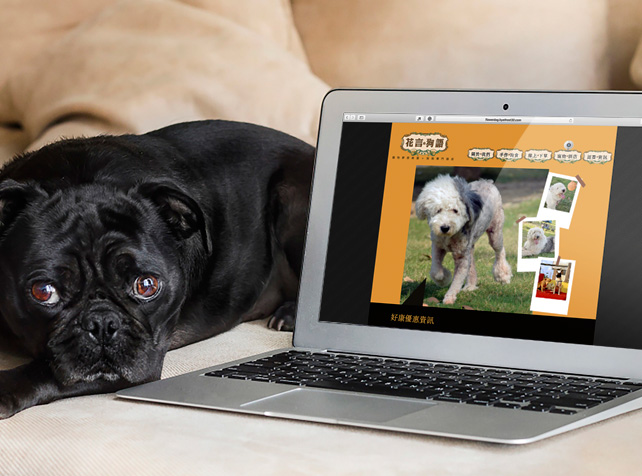

Hello me 3.0 !
我在網路上認識了很不一樣的世界，除了用網路認識朋友、熟悉網站架構的語言是件很有趣的事情。希望用這個方式來表達我對這個新世界的熱情。
經歷
-
2012 - 2013
網頁設計師-兼職
畢凱帝設計有限公司負責psd/ai切版
-
2013 - 2014
網頁設計專員
台灣八頁有限公司官網製作/網頁美術設計
-
2014 - 2016
網站企劃專員
全漢企業製作行銷活動網站
執行響應式網站改版專案
技能
主要為 PSD 2 HTML ，繼續精進 jQuery Ajax, JavaScript 相關技術
程式語言
 HTML
HTML
- HTML 5 Semantic tag
 CSS
CSS
- CSS 3 Animation
- Sass
Framework
 jQuery
jQuery Bootstrap 3
Bootstrap 3
- Grid layout
工具
- SublimeText 3
 Github
Github
作品集
fsplifestyle / 官網 / 2016
在時間與人力考量下，與工程師討論決議採用符合快速開發需求之framework - Bootstrap grid 改版為響應式網站。
去瞧瞧PowerBank / 微網站 / 2014
套用第三方jQuery-ui插件，並透過響應式設計觸及行動裝置使用者，快速瞭解產品特點。
去瞧瞧Rachel Yu / 個人作品網站 / 2013
此網站為一位設計系朋友委託製作，整體採簡單素色風格，搭上jQuery互動特效，希望能讓訪客在視覺上感到舒適。
去瞧瞧 花言狗語 / 寵物網站設計 / 2012
這是一家新開幕的寵物旅館，也是我第一件網站設計案。當時公司接下店家整體行銷，希望網站能營造活潑、可愛風格，最終採店家室內設計的系統色製作網站。
去瞧瞧活動網站 / 2015
PSD 2 HTML 切版、jQuery換圖功能
去瞧瞧活動網站 / 2015
PSD 2 HTML 切版
去瞧瞧